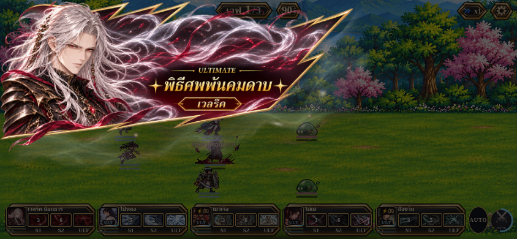
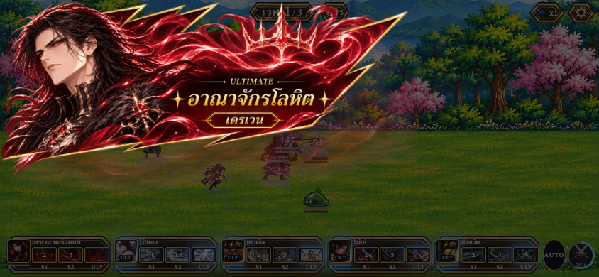
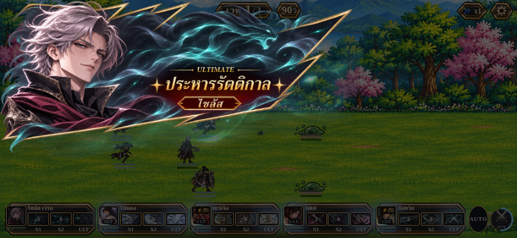

<!doctype html><meta charset="utf-8"><style>body{margin:16px;background:#10141c;color:#f8e5bd;font:16px system-ui;display:grid;grid-template-columns:1fr 1fr;gap:16px}figure{margin:0}figcaption{padding-bottom:8px}img{width:100%;display:block}</style><figure><figcaption>เวลริค · 844 × 390</figcaption><a href="vaelric-844.png"></a></figure><figure><figcaption>เดรเวน · 844 × 390</figcaption><a href="draeven-844.png"></a></figure><figure><figcaption>มอร์เดรียนน์ · 844 × 390</figcaption><a href="mordrienne-844.png"></a></figure><figure><figcaption>ไซลัส · 844 × 390</figcaption><a href="sylas-844.png"></a></figure><figure><figcaption>ลูเซียน · 844 × 390</figcaption><a href="lucien-844.png"></a></figure><figure><figcaption>ไป๋หลง · ภาพอ้างอิงหลัก (อาร์ตต้นฉบับ)</figcaption><a href="../../../assets/ui/cutins/bailong-aura-italic.png"></a></figure>